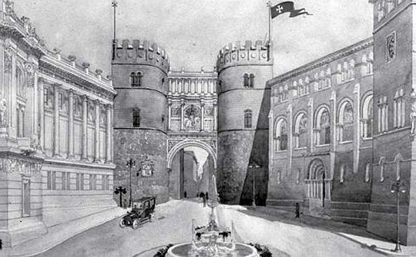
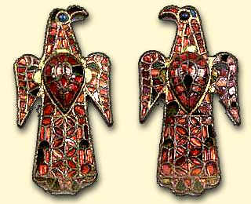
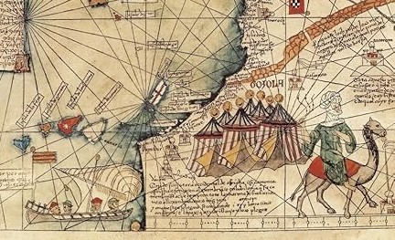
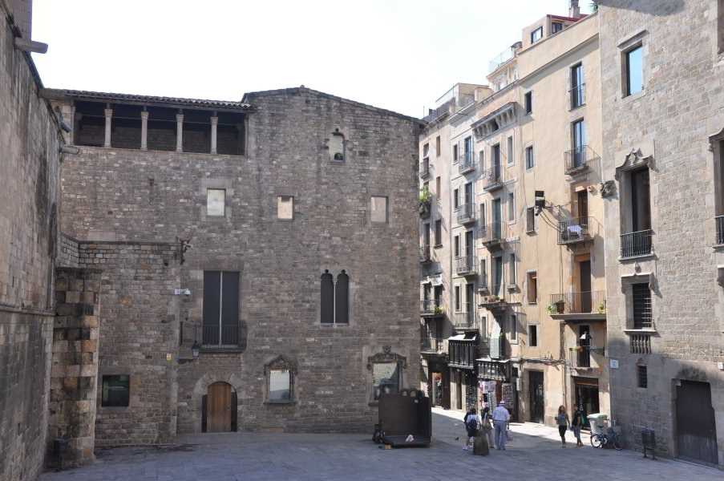
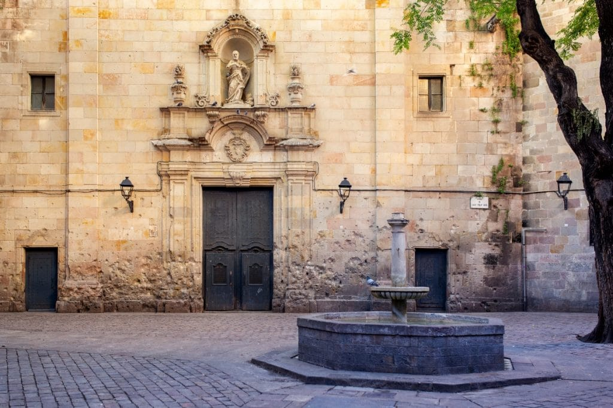
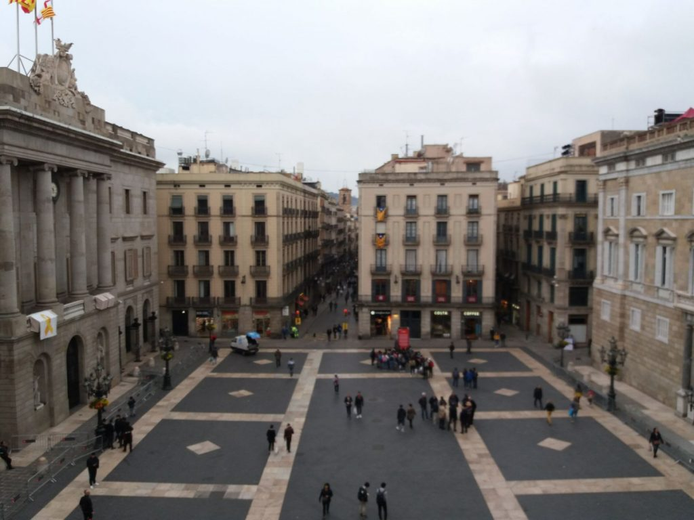

El Mosaic de la Història

ROMA

VISIGOTS
AL-ÀNDALUS
GÒTIC

EL CALL
RENAIXEMENT

IL·LUSTRACIÓ

GUERRA CIVIL

PRESENT
"Has desxifrat la pedra, has llegit el temps.
El Manuscrit ja no és un secret de la ciutat,
ara és part de la teva memòria."
Tancar el Manuscrit